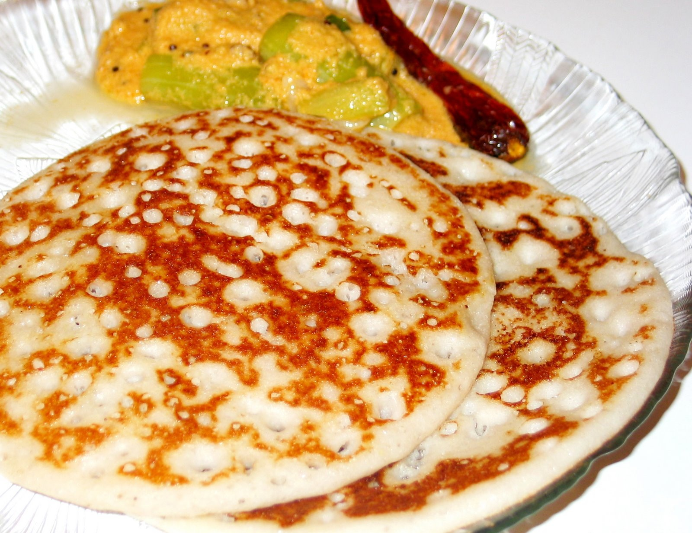

Ingredients
Ripe bananas - 2
Rice flour - 1/4 cup
All purpose flour (Maida) - 2 tblsp
Cardoman powder - 1 pinch
Sugar - to taste
Raisins - 2 tblsp (chopped)
Cashews - 2 tblsp (chopped)
Ghee - to fry
Method
1. Mash the bananas nicely with a masher or with hands.
2. Add rice flour, maida, sugar and cardomon powder.
3. Mix everything together to get a thick batter. You can mix with your hands or
use a blender.
4. Mix the raisins and cashews with the batter.
5. Heat a griddle and pour a spoonful of batter and spread gently. It will be
thicker than normal dosa.
6. Pour few drops of ghee on top. Fry on medium flame till the dosa is
completely cooked and golden brown on both sides.